Research Keywords at Human Factors and Simulation Laboratory
- Human-integrated systems engineering
- Human-Technology Frontier: Future work, workers, and workplace
- Cognitive engineering and decision making
- Multi-person virtual reality (MVR)
- Dynamic tasks
- Spatial-temporal data analysis (e.g. analysis of humans' eye movement networks)
- Comparison and clustering of patterns
- Predictive models
- Multimodal analysis (e.g. eye movements, brain activities, haptic interactions)
- Assistive learning/training interventions
- Product development and usability testing
- Automated analysis software development
- Funded collaborations: Multi-person virtual reality (MVR), air traffic control, gamification, Deepwater Horizon operations, wearable devices
- Unfunded collaborations: Aircraft piloting, driving, weather forecasting, commercial marketing, remote healthcare
Research Methodologies and Examples of Applications
- Research Methodologies at Human Factors and Simulation Laboratory
- [NSF CAREER] Non-tex-based Smart Learning in Multi-person VR using eye movements, brain activities, and haptic interactions
- Air Traffic Management Systems
- Pilot Cockpit Systems
- Weather Forecasting and Alerting Systems
- Online Healthcare Systems
- Enhancing Expert Containment, Decision Making, and Risk Communications: Virtual Reality Offshore Operations Training Infrastructure
- Marketing strategies: Investigation of human behavior when watching Youtube commercials
- Haptic cue: Predicting mouse or touchpad patterns
Research Methodologies
- Bridging the three areas of Data Analytics, Operations Research, and Human Factors.
:
We develop, adapt, implement, and automate the algorithms and mathematical models which allow more accurate behavior predictions and/or performance evaluations of humans and human-integrated systems. The results allow us to find effective ways to increase humans' performances and inform the design of human-centered systems. One important research area, among many others pursued in our lab, is the finding significant patterns from spatial-temporal data, specifically humans' eye movement networks. Eye movement networks can provide valuable information about humans cognitive and decision making processes when humans work within various systems. One issue is that eye movements can be inherently stochastic and complex, especially for a challenging task that takes a long period of time. We have been discovering or adapting methods to characterize and cluster eye movement networks that can be interpreted in meaningful and useful ways. Recently, we have been developing new real-time multimodal analysis methods within the multi-person virtual reality (MVR) environment using eye movements, brain activities, and haptic interactions.
- Data Analytics and Operations Research: Some examples of the algorithms and mathematical models used in our lab are: Clustering (e.g. agglomerative hierarchical clustering, DBSCAN, K-means), Entropy (Shannon's), Graph theory, String Edit Algorithm, regressions, stochastic process (e.g. ordered and unordered transition probabilities), Dynamic Programming (or Dynamic Time Warping),among others. Recently, we have been looking adapting other Operations Research methods (e.g. Linear Programming, Markov chains, average run length (ARL)). In addition, we have been applying Support Vector Machine and are seeking other viable machine leaning approaches for our research. Possibilities are endless.
- Human Factors: The results obtained from algorithms and mathematical models should be interpretable, meaningful, and useful, especially to improve the performance of humans or human-integrated systems. The results are used to assess humans' visual attentions, decision making processes, situation awareness, interface designs, interactions between the humans vs information flow within the systems, differences between experts and novices, training interventions, among others. The multi-disciplinary research activities allow us to create new paradigms and new technologies in the Human-Technology Frontier.
National Science Foundation CAREER Award
- Smart Learning in Multi-person VR using eye movements, brain activities, and haptic interactions
:Non-text-based smart learning refers to technology-supported learning that uses non-text features (i.e. visualized information)
and adapted learning materials based on the individual’s needs. Fully immersive multi-person virtual reality (MVR) refers to
humans located at different places wearing VR devices to join a single virtual room, a classroom with unlimited size,
to learn from an instructor. The learning environment is poised to undergo a major reformation, and MVR will augment,
and possibly replace, the traditional classroom learning environment. The purpose of this research is to discover new smart
learning methodologies within the MVR environment using nonintrusive multimodal analysis of physiological measures, including
eye movement characteristics, haptic interactions, and brain activities. Addressing the variability and complexity of the
spatio-temporal data in a timely manner is the key issue, and operations research concepts as well as data science algorithms
will be developed and/or adapted to tackle the issue. The near real-time analysis will enable the prediction of whether the
learners are currently engaged in learning activities. The predictions will be used to provide timely scaffolding methods
that might motivate the learners to re-engage in learning activities.
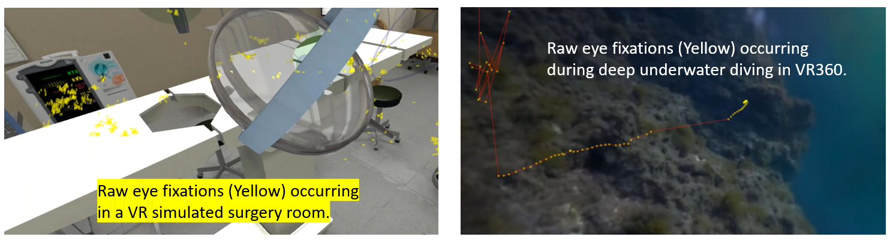
The image above shows how we can obtain raw eye movement data in a fully immersive VR environment.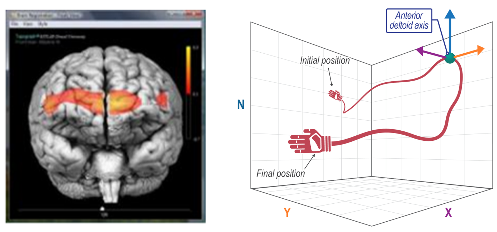
The image above shows how we can additionally obtain brain activity data and haptic interaction data. The technology already exists and the issues that we will be devloping: [1] non-text-based (or visualized) learning materials in multi-person virtual reality (MVR) environment, [2] human behavior prediction models through the analsis of physiological data (eye movements, brain activities, and haptic interactions), and [3] near real-time scaffolding methods to address individual needs within the MVR environment.Researchers:
PI: Dr. Ziho Kang
Research Assistant: Mr. Ricardo Fraga (Ph.D. candidate)
Research Assistant: Mr. Junehyung (or June) Lee (Ph.D. student)
Research collaborator: Dr. Kurtulus Izzoteglu, Biomedical Engineering, Drexel University
Research collaborator: Dr. Kwangtaek Kim, Computer Science, Kent State University
Collaboration entities: OU Innovation @ The Edge, OU Library, OU Diversity and Inclusion, Thick Descriptions (non-profit organization).
Air Traffic Management Systems
- Airport Tower Control Risk Analysis using VR: This research involves discovering expert air traffic controllers'visual scanning patterns
that can be effectively taught to the novices to possibly prevent accidents and improve performance.
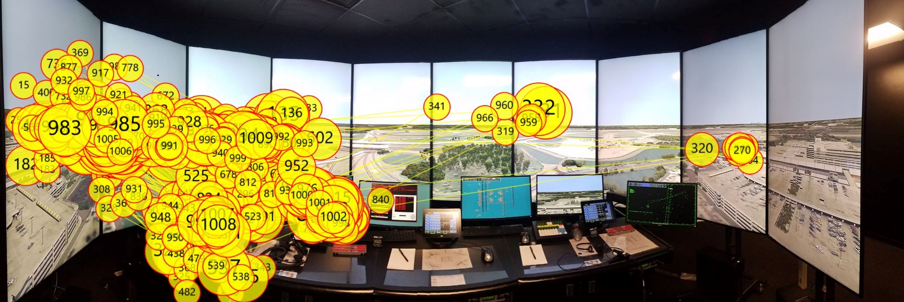
The image above shows the expert's eye movements overlaid onto the recorded field of view. A realistic VR environment was created using eight 60 inch monitors. The center of the circles indicate the eye fixation locations. The size of the circels are proportional to the eye fixation durations. The lines indicate the fast saccadic movements among the eye fixations. The numbers in the circles indicate the eye fixation sequences. The representation of the eye fixation sequence is called a visual scan path.
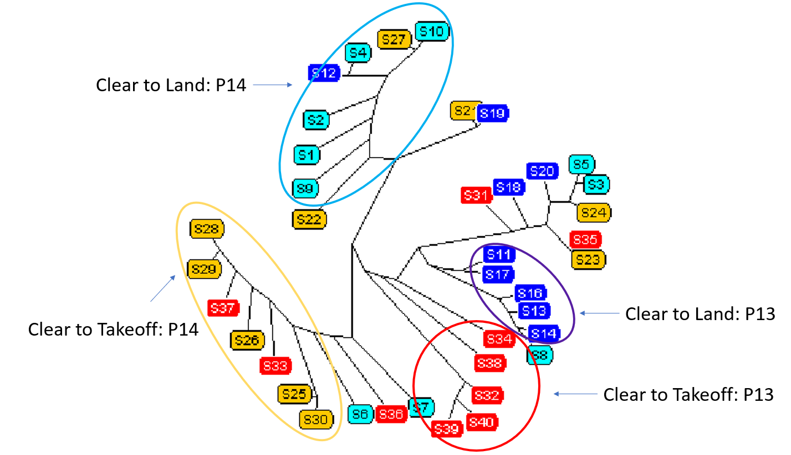
The image above shows how the experts' visual scanning patterns can be discovered through clustering many instances of visual scan paths. - Eye movement analysis and data visualization: This research involves a wide vareity of methods to aid air traffic controllers with managing multiple dynamic aircraft. Eye tracking data analysis is performed to further understand the cognitive process of controllers as they scan aircraft, then identify and solve conflicts between them. This understanding leads to detailed characterization of scanning strategies and more effective training methods.
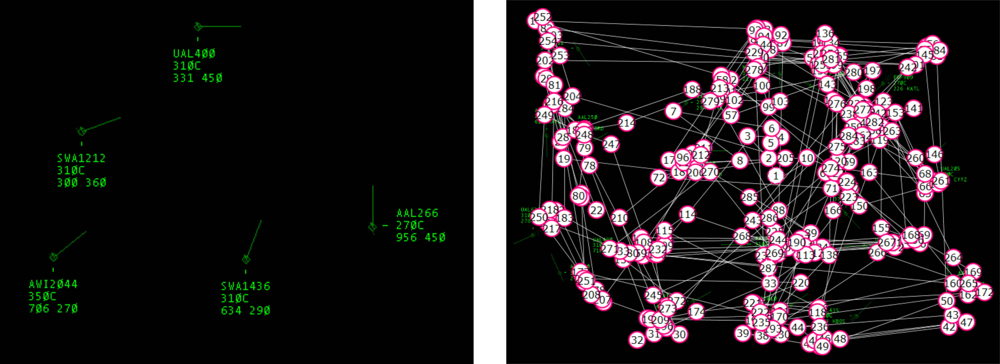
The image above on the left shows a zoomed-in area of a realistic simulation of an air traffic radar display. Each green diamond represents an aircraft, the line projecting out represents its travel direction, and the text is a data tag listing the flight number, altitude, and velocity respectively. The image on the right shows a 1.5 minute eye movement scan of an air traffic controller overlaid on a scenario including 20 aircraft. The circled numbers show the order in which the eye fixations were made and the white lines connecting them are rapid movements between fixations. There are many ways to characterize these scanning startegies including categories such as duration, number of comparisons between aircraft, and search patterns.
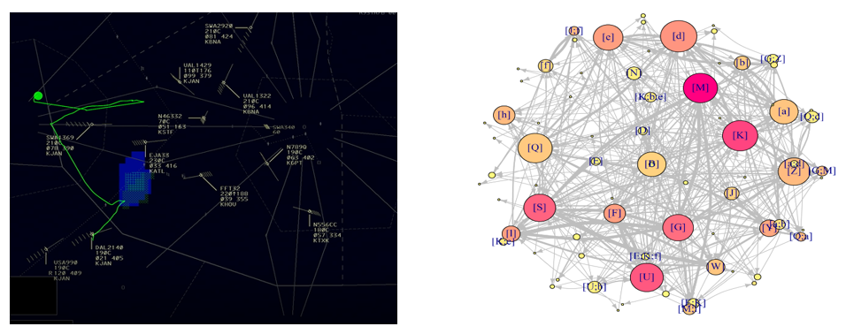
The image to the left represents a simulated RADAR display of low altitude Enroute airspace. The Green dot shows the eye fixation location of an ATC. The green lines represent saccades of the eye movement. The image on the right represents the directed weighted network (DWN) representation of the AOI fixation sequence data of the ATC. The size and the colour of the nodes (AOIs) are proportional to the number of times the AOIs are visited and to the amount of eye fixation duration that happened on the AOIs respectively (Red means higher fixation duration yellow means lower fixation duration). - Multimodal Analysis using Neuro-imaging and Eye Movements to Assess Cognitive Workload: The emergence of wearable sensors that measure physiological signals enables us to monitor the mental workload in real time without interfering in everyday operational activity.

 The images above show the task difficulty increase based on the number of aricraft vs. number of commands issued by the controller. We can investigate the correlations among the eye movement characteristics, brain activities (i.e. oxygenation), and task complexity.
The images above show the task difficulty increase based on the number of aricraft vs. number of commands issued by the controller. We can investigate the correlations among the eye movement characteristics, brain activities (i.e. oxygenation), and task complexity. - Gamification of visual scanning strategies.: The aim is to develop fun and engaging games to increase the performance of the trainees.
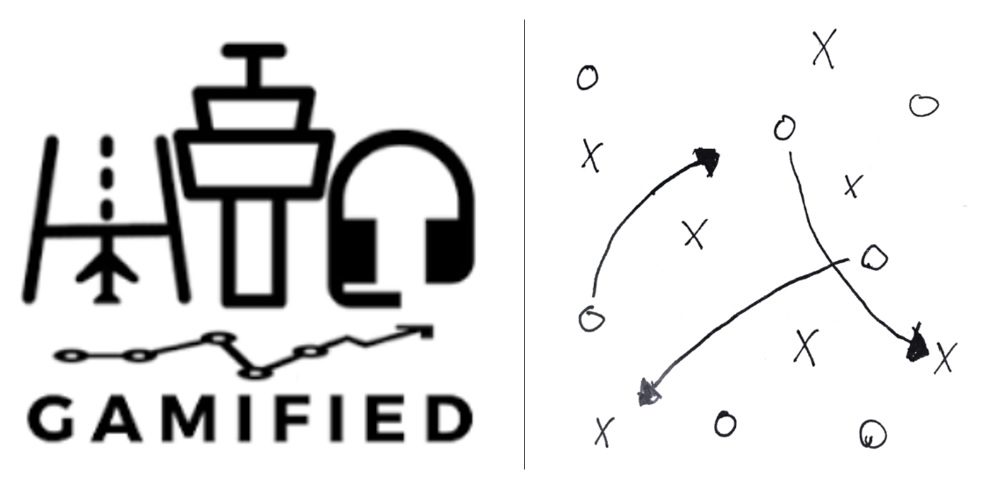
Researchers:
PIs: Dr. Ziho Kang
Mr. Clay Wyrrick
- Development of automatic process of mapping eye tracking data to multiple moving objects
- Universal Design for Learning (UDL) and multimodal training : The aim is to to identify and implement the UDL principles to embrace different learning styles in order to support the training of FAA Academy candidates. In addition, this research investigates the possibiity of applying state-of-the-art technologies such augemented reality, virtual reality, eye tracking, and EEG (brain activity).
- Combined analysis of visual scanning patterns and aircraft control strategies for traininig intervention: Develop improved training materails for the FAA Academy candidates.
Researchers:
PI: Dr. Ziho Kang
Researchers in the Aerospace Human Factors Research Division at FAA CAMI
Mr. Saptarshi Mandal
Mr. Ricardo Fraga
Researchers:
PI: Dr. Ziho Kang
Researchers in the Aerospace Human Factors Research Division at FAA CAMI
Mr. Saptarshi Mandal
Mrs. Sarah McClung
Researchers:
PIs: Dr. Ziho Kang and Dr.Kurtulus Izzetoglu (Biomedical Eng., Drexel U.)
Mr. Ricardo Fraga (OU)
Ms. Yerram Pratusha Reddy (Biomedical Eng., Drexel U.)
PI: Dr. Ziho Kang
Researchers in the Aerospace Human Factors Research Division at FAA CAMI
Mr. Saptarshi Mandal
PI: Dr. Ziho Kang
Co-PIs: Drs. Randa R. Shehab, Lei Ding, and Han Yuan.
SME: Stephen G. West
Ms. Lauren N. Yeagle
Ms. Mattlyn R. Dragoo
Mr. Josiah Rippetoe
Mr. Ricardo F. Palma
PI: Dr. Ziho Kang
Co-PI: Dr. John Dyer
Mr. Saptarshi Mandal
Mr. Ricardo F. Palma
Mrs. Sarah N. McClung
Mr. Kelvin Egwu
Pilot Cockpit Systems
- Predicting fatigue using eye movement characteristics: This research involves the investigation of pilot behaviors when interacting with cockpit interfaces under fatigue. Human errors and interface usability issues are being investigated. The yellow boxed highlight in the figure below are defined as areas of interest (AOIs) so that we investigate whether the pilots were attending to visually specified events when fatigued.
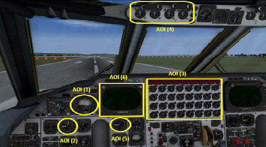
Researchers:
Lead: Dr. Ziho Kang
Mr. Salem Naeeri
Weather Forecasting and Alerting Systems
- Investigating forecasters' cognitive processes when detecting weather hazards: This research is based on a collaborative effort with researchers at NOAA.
- Understanding forecasters' situation awareness when predicting flash floods.
- Usability testing of weather alert applications: Supported by Weather Decision Technologies.
Lead: Dr. Pamela Hiselman
Dr. Ziho Kang
Dr. Katie Bowden
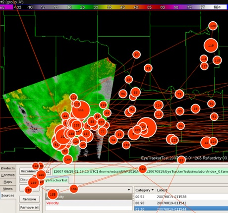
Lead: Dr. Randa Shehab
Dr. Ziho Kang
Dr. Jonathan Gourley
Dr. Elizabeth Argyle
Lead: Dr. Ziho Kang
Mr. Khamaj Abdulrahman
This research focuses on evaluating the usability and determining the usability issues of mobile weather alert applications. Specifically, we are investigating the Weather Radio application as the sample representative for the weather alert applications.
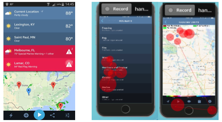
The image above on the left is a screen shot of the home screen of the Weather Radio application. The image on the right shows a sample of eye movement scan of one of the application’s users.
Online Healthcare Systems
- This research involves the usability of softkey when interacting with online healthcare systems using tablets. In addtion, we are investigating the users' comprehension level on the medical answers posted by the doctors. The image depicts the evolution of typing error calculation methologies in the domain of human-computer interaction. We have developed a novel approach to assess such errors.
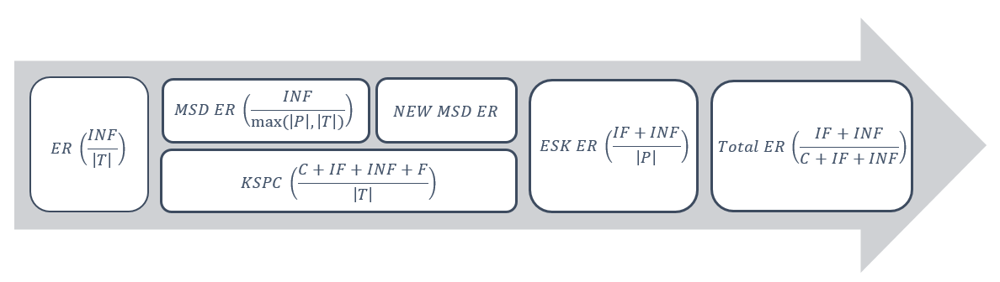
Researchers:
PI: Dr. Ziho Kang
Co-PI: Dr. Kwangtaek Kim
Ms. Jiwon Jeon
Mr. Lucas Mosoni
Mrs. Sarah McClung
Enhancing Expert Containment, Decision Making, and Risk Communications: Virtual Reality Offshore Operations Training Infrastructure
- This research is based on the Deepwater Horizon operations, specifically Gulf BP oil crisis. We are investigating ways for operators to effectively perceive imminent risk and communicate among one another. The figures show the real-time display of indicators before the accident and the analysis of the operators' verbal responses when they were interrogating the designated areas of interest (AOIs 1~7).
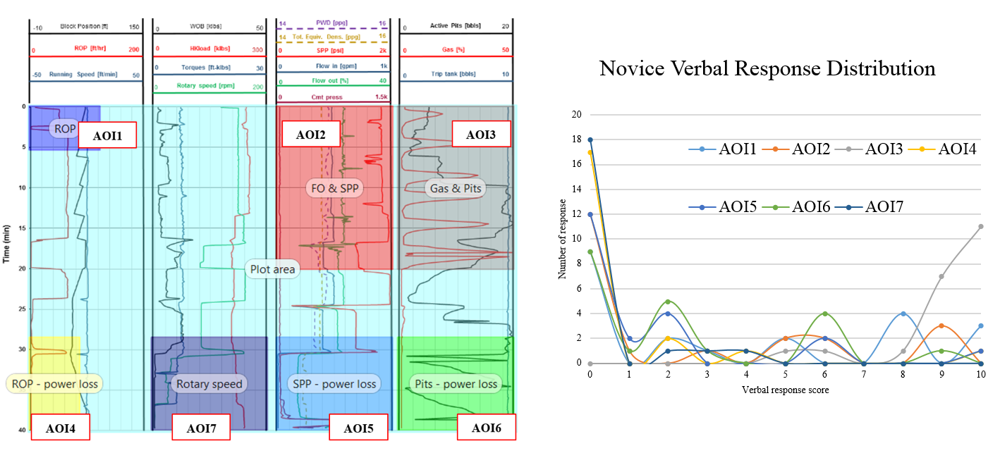
Researchers:
PI: Dr. Saeed Salehi
Co-PIs: Drs. Ziho Kang and Edward Cokely
Ms. Jiwon Jun
Mr. Vincent ybarra
Mr. Raj Kiran
Marketing strategies: Investigation of human behavior when watching Youtube commercials
- We are investigating humans' visual attention behavior when observing commercials on Youtube. As a very simple example, we are visually attentive to an interesting clip (lower left figure) but are eager to skip a clip if it is does not grasp our attention (lower right figure).
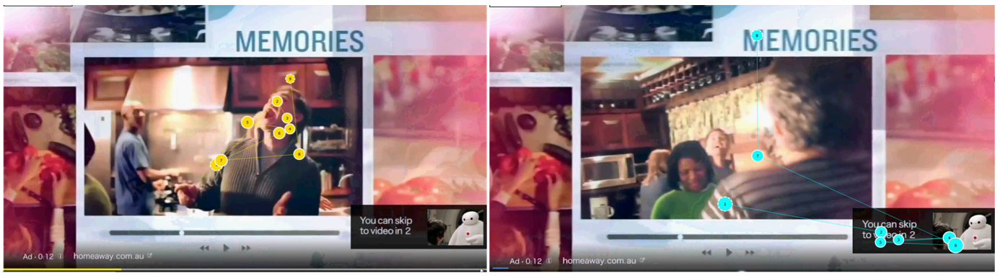
Researchers:
Lead: Dr. Doyle Yoon
Dr. Ziho Kang
Mr. Fuwei Sun
Ms. Morgan Corn
Haptic cue: Predicting mouse or touchpad patterns
- We have developed methods to use mouse or touchpad patterns as a control method.
Lead: Dr. Ziho Kang
Mr. Lucas Cezar